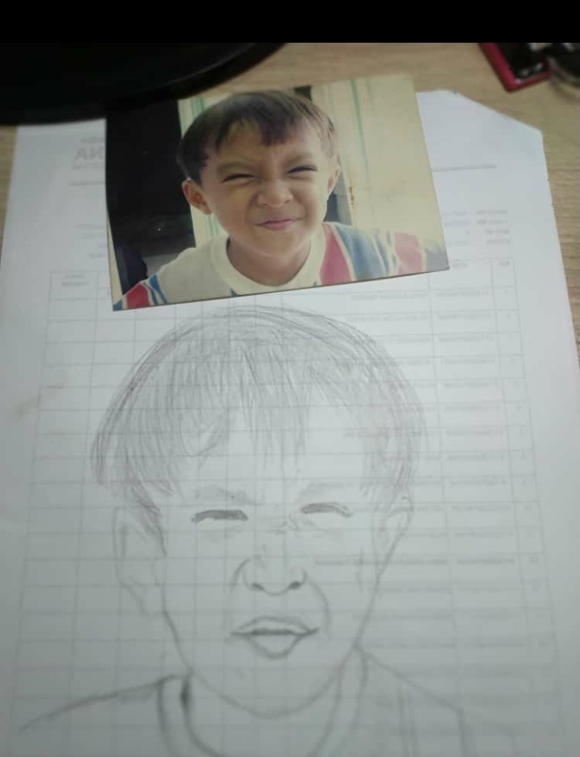

Nama : Raka Gian Aditya Asbath
NPM : 41155050210036
Kelas : Informatika A2
Horizontal Rules (hr) yaitu untuk memisahkan konten dengan garis horizontal dapat di lihat di atas terdapat dibawah header paling atas
Line Break (br)
yaitu untuk menjeda baris
gunakan br untuk membuat garis baru tanpa harus menambahkan Paragraf baru
pre
Konten Pre untuk teks yang sudah di format sebelumnya
Konten Pre di tampilkan dalam font dengan lebar yang tetap
dan juga mempertahankan spasi dan jeda baris
contoh penggunaan konten pre yaitu Membuat Puisi
Text Strong untuk menunjukan kata atau kalimat yang penting. Menggunakan konten (strong) di dalam konten paragraf (p)
Text Italic atau Miring menggunakan konten (i)Emphasized Text untuk menunjukan kata atau kalimat yang di tekankan seperti kata asing atau kata ilmiah. Menggunakan konten (em) di dalam konten paragraf (p)
Text Small atau Kecil menggunakan konten (small)Marked Text untuk menandakan kata kata yang disorot. Menggunakan konten (mark) di dalam konten paragraf (p)
Deleted Text untuk text yang mau di hapus dari dokumen (revisi) dalam tampilan kata yang di coret atau garis di tengah. Menggunakan konten (del) di dalam konten paragraf (p)
Inserted Text untuk menggaris bawahi text (underline). Menggunakan konten (ins) di dalam konten paragraf (p)
Subscript Text muncul setengah karakter di bawah garis normal, dan terkadang ditampilkan dalam font yang lebih kecil. Teks subscript dapat digunakan untuk rumus kimia, seperti H2O. Menggunakan konten (sub) di dalam kontek paragraf (p)
Supscript Text muncul setengah karakter di atas garis normal, dan terkadang ditampilkan dalam font yang lebih kecil. Teks superscript dapat digunakan untuk footnote, seperti WWW[1]:
Menampilkan photo menggunakan konten (img); src untuk menentukan URL gambar; alt untuk menampilkan teks jika gambar tidak dapat di tampilkan; Width-Height untuk menentukan ukuran gambar
Menambahkan audio menggunakan konten (audio); controls untuk kontrol audio, seperti play, pause, dan volume; source untuk menentukan file audio alternatif yang dapat dipilih oleh browser. browser akan menggunakan format pertama yang dikenali